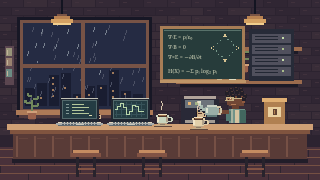
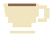

SEM CAFÉ, SEM CONDIÇÕES.Café primeiro.
Café primeiro.
O resto depois.
O laboratório roda a código. A equipe, a café.

QUEM SALVA O LABORATÓRIO AGORA?
Carregando…
Missão: não deixar a garrafa vazia.
01PRÓXIMA COTA
NINGUÉM ESCAPA
A fila da cafeína
1 cota = 250 g. Trouxe duas? Anda duas casas.
A Gazeta do LSN
Matérias, pérolas e a conversa do laboratório.
Ler a Gazeta →O JORNAL DO NOSSO LABORATÓRIO
A Gazeta do LSN
Notícias, descobertas e pérolas. Sempre com café.
EDIÇÃO Nº 001LEITURA OBRIGATÓRIA NO INTERVALO DO CAFÉLSN · CEARÁ
POR PARES
A Gazeta do LSN

Matérias e pérolas do laboratórioPreço: um cafezinho
FRASE DO DIA · DIRETO DA BANCADAFlagrante: mais uma tentativa de resolver tudo com café.
“O código não tem bug.
Ele só está testando
a nossa fé.”
— Bolsista anônimo31/10/2026 · entre um café e um commit
Conversa desta página
Entre na sua conta para comentar.
Seus comentários aguardam autorização do administrador. Essa permissão é independente da sua vaga na fila.
ACESSO À CAFEÍNA
E aí, cafeteiro?
Identifique-se antes do primeiro gole.
Espaço dos cafeteiros
Minhas solicitações
Publicar na Gazeta
Prepare a página e confira a prévia antes de publicar.
PRÉVIA · AINDA NÃO PUBLICADA
A Gazeta do LSN
FRASE DO DIAMinhas matérias
Você pode excluir as matérias que publicou.
Membros aguardando aprovação
Vincule cada conta a uma vaga da equipe.
Compras para confirmar
Participantes e ordem da fila
Ajuste a equipe e a ordem. Salve para aplicar.
HERÓIS SEM CAPA, COM CAFÉ
Quem pode comentar na Gazeta
Autorize cada perfil separadamente. Não é preciso ter vaga na fila; ser autor também não libera comentários automaticamente.